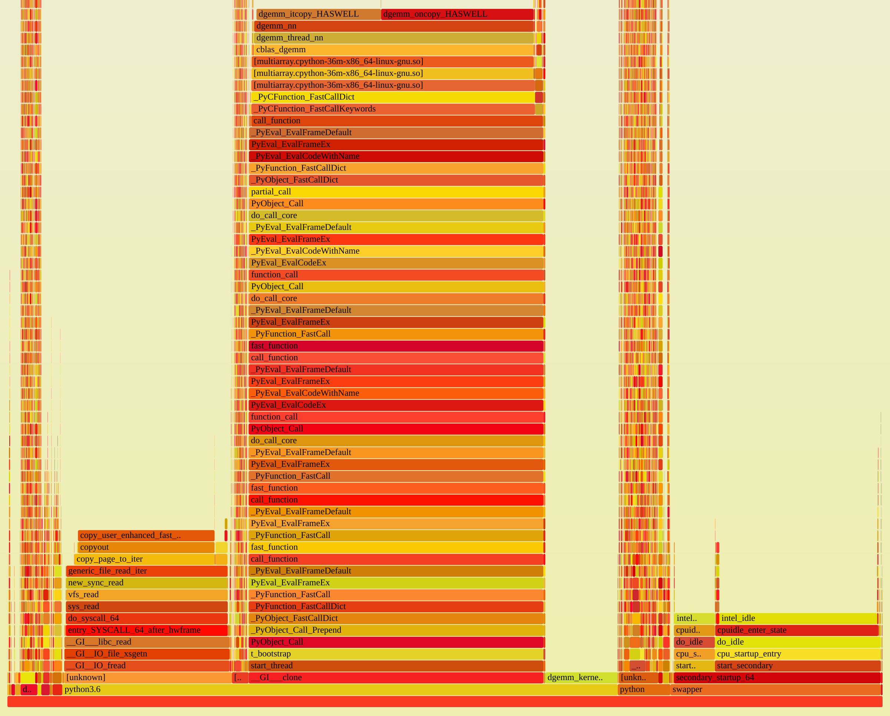

Why Python?
Python is well established in the scientific community. It is usable both for developers, but also for many microscopists.
Its high-level construct allow for fast iteration and prototyping. There is an extensive ecosystem of packages for scientific computation leveraging existing native libraries. Python has good interoperability with low-level languages like C, which means it is well suited as a glue language for existing low-level routines, without introducing inefficiencies such as copies of large buffers on each interaction.
Isn’t Python slow?
Yes, it can be slow, but we mostly use Python for setting up the computation, creating buffers, setting parameters, etc. We use it as a glue language for native parts (NumPy/OpenBLAS, …) or use Numba for critical code sections.
See for example this profile, visualized as a flamegraph:
The workload is similar to what LiberTEM will later do: it reads files from HDFS and does matrix multiplication on the data.
Most of the time is spent reading the file (block on the left: sys_read) or
actually performing the matrix multiplication (center block: anything containing dgemm).
The Python parts are mostly in the narrow (= little time) but high (= deep call stacks)
pillar on the right. The dask scheduler is also visible in the profile, but takes up
less than 2% of the total samples.
Note the swapper part on the right: this was a full-system profile, so unrelated
things like swapper or intel_idle are also included.
But what about (multicore) scaling?
NumPy releases the GIL, so multiple threads can work at the same time. Even if
this were not the case, we can still use the multiprocessing workers of dask.distributed
and scale to multiple cores. See also the Performance section.